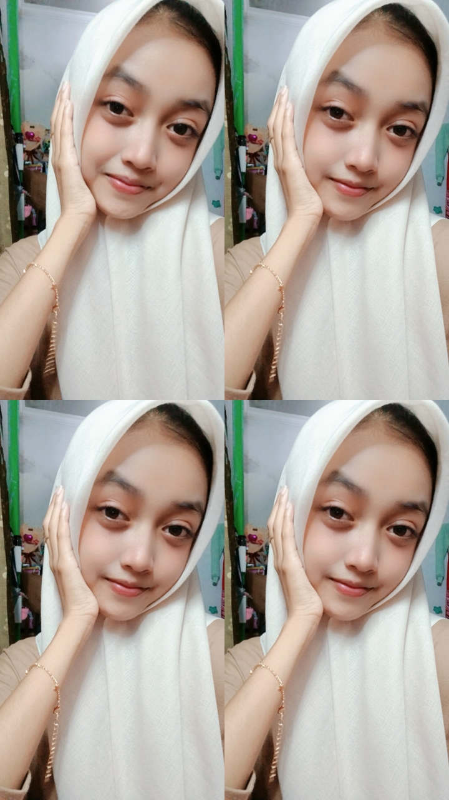

Web Development
Mengenal dasar HTML, CSS, dan cara menyusun halaman web yang rapi.
Pelajar · Calon Web Developer
Halo! Saya Indi Salwa Zaharani, siswi kelas XI RPL 1 di SMK NEGERI 8 JEMBER yang sedang belajar dan mengembangkan kemampuan di bidang teknologi, pemrograman, dan pengembangan website.

01 / Tentang saya
Saya percaya setiap hal hebat berawal dari rasa ingin tahu dan keberanian untuk mencoba.
Saat ini saya menempuh pendidikan di jurusan Rekayasa Perangkat Lunak. Saya menikmati proses belajar teknologi, merangkai ide menjadi tampilan website, dan terus mencoba hal baru melalui latihan-latihan kecil.
02 / Keahlian
Masih terus berkembang — ini beberapa hal yang sedang saya eksplorasi.
Mengenal dasar HTML, CSS, dan cara menyusun halaman web yang rapi.
Belajar membuat tampilan yang mudah digunakan, nyaman, dan menarik.
Melatih logika dan memecah tantangan menjadi langkah-langkah kecil.
03 / Proyek
Setiap latihan adalah kesempatan untuk mencoba ide dan memahami sesuatu yang baru.
Latihan menyusun halaman perkenalan diri dengan HTML dan CSS.
Eksplorasi desainKonsep antarmuka sederhana untuk mencatat aktivitas dan ide harian.
Eksplorasi desainKumpulan percobaan kecil untuk memahami logika dan dasar JavaScript.
Eksplorasi desainProyek di atas merupakan contoh latihan dan eksplorasi belajar.
04 / Kontak
Saya senang belajar hal baru dan bertukar cerita seputar teknologi. Sampai jumpa di perjalanan kreatif berikutnya!
Kembali ke atas